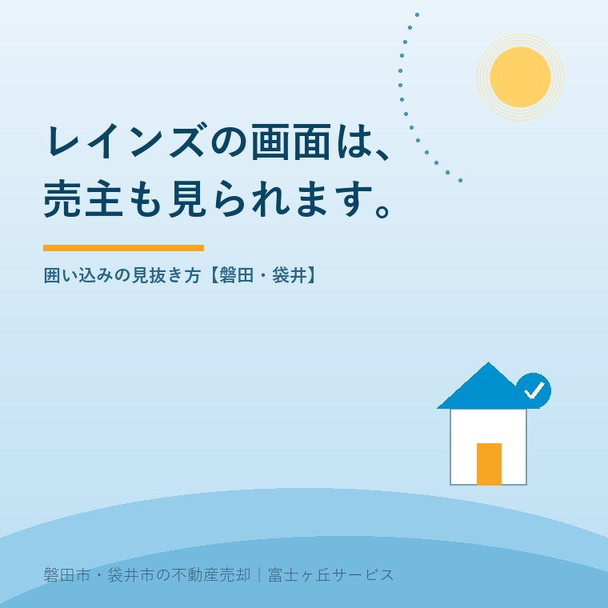

2026年8月9日｜カテゴリ：相場・地域・売却実務／不動産屋の本音

この記事の要点
Q. 実家を専任媒介で任せて3か月、「反応がありません」としか言われません。本当に売りに出ているのか、素人には確かめようがないですよね？
A. 確かめられます。しかも、無料で、今すぐです。媒介契約を結ぶと不動産会社は物件をレインズ（指定流通機構）に登録し、登録証明書という書面を売主に渡します。2025年1月4日以降に発行された登録証明書には2次元コード（QRコード）が印刷されており、スマホで読み取れば売主専用の確認画面が開きます。そこには自分の物件の取引状況（ステータス）がリアルタイムで表示されます。表示は「公開中」「書面による購入申込みあり」「売主都合で一時紹介停止中」の3つ。2025年1月1日施行の宅地建物取引業法施行規則の改正で、このステータスの登録は宅建業者の義務になりました。虚偽の登録や更新の放置は、宅建業法第65条に基づく指示処分などの対象になり得ます。心当たりがないのに「売主都合で一時紹介停止中」になっていたら、それが囲い込みの最も分かりやすい信号です。磐田市・袋井市・森町では、介護施設の運営から不動産事業を始めた富士ヶ丘サービスのような「介護×不動産」専門の会社に相談するという選択肢があります。
この仕事をしていて、いちばん答えにくい質問があります。「うちの実家、ちゃんと売りに出てるんでしょうか」。
答えにくいのは、答えが分からないからではありません。その疑いが、ときどき当たっているからです。
売主から売却を任された会社が、他社に物件を紹介せず、自社で買主を見つけるまで情報を止めておく。業界ではこれを「囲い込み」と呼びます。売主・買主の双方から仲介手数料をもらう両手仲介を狙うためです。売主にとっては、買い手候補の母数が減り、売れるまでの期間が延び、結果として値下げに追い込まれる。売主の利益を、仲介会社の利益と引き換えにする行為です。
この囲い込みに対して、2025年1月1日、国が制度で手を打ちました。今日はその中身と、売主が自分の手で確かめる方法を書きます。難しい話は一切ありません。必要なのは、あなたが受け取ったはずの1枚の紙だけです。
専任媒介契約または専属専任媒介契約を結ぶと、不動産会社にはレインズへの登録義務があります。期限も決まっています。
| 媒介契約の種類 | レインズ登録の期限 | 売主への業務報告 |
|---|---|---|
| 専属専任媒介契約 | 契約日の翌日から5日以内（休業日を除く） | 1週間に1回以上 |
| 専任媒介契約 | 契約日の翌日から7日以内（休業日を除く） | 2週間に1回以上 |
| 一般媒介契約 | 登録義務なし（任意） | 法律上の定めなし |
登録が済むと、レインズから登録証明書が発行され、不動産会社はこれを遅滞なく売主に引き渡さなければなりません。契約書一式に紛れているか、メールに添付されているはずです。まずはそれを探してください。
もし受け取っていないなら、その時点でひとつ目の問題です。「渡し忘れました」で済む書類ではありません。遠慮せず請求してください。
国土交通省は令和6年12月24日、レインズの機能強化について公表し、売主向けのリーフレットを作成しました。その柱が登録証明書への2次元コード（QRコード）掲載です。2025年（令和7年）1月4日発行分から始まっています。
スマホのカメラで読み取ると、売主専用の物件確認画面が開きます。ログインIDやパスワードを自分で作る必要はありません。自分の物件だけが、そこに表示されます。
もっとも、この仕組み自体は新しくありません。ステータス管理機能は平成28年（2016年）1月から存在していました。証明書に印字された確認用のIDとパスワードで、以前から見ることはできたのです。ただ誰も知らなかった。そして法的な裏づけがなかったので、更新されないまま放置されたり、事実と違うステータスが表示されたりしていました。
画面に出るのは、次の3つのいずれかです。ここが今日の核心です。
| 表示 | 本来の意味 | 売主が疑うべきこと |
|---|---|---|
| 公開中 | 他社に広く紹介できる状態。正常 | 特になし。これが基本形 |
| 書面による購入申込みあり | 購入申込書（買付証明書）が書面で入っている | あなたに報告が来ていますか？来ていないなら、申込みを隠されている疑いがあります |
| 売主都合で一時紹介停止中 | 売主の事情（入院・親族の反対・一時的な販売中止など）で紹介を止めている | あなたが頼んでいないなら、これが囲い込みの信号です |
3行目をもう一度読んでください。「売主都合」です。売主であるあなたが止めていないのに、そう表示されている。これは、あなたの名前を使って、他社からの紹介を断っている状態です。
囲い込みの典型的な手口は、他社から「物件を紹介したい」と電話が来たときに「商談中です」「売主さんが今は止めています」と断ることでした。ステータスはその断り文句を画面に残したものとも言えます。だからこそ、売主が見れば分かるのです。
国土交通省は宅地建物取引業法施行規則を改正し、2025年（令和7年）1月1日から施行しました。売主の立場で押さえるべき変更点は2つです。
| 2024年12月まで | 2025年1月から | |
|---|---|---|
| ステータスの登録 | 機能はあるが任意。更新しなくても直接の罰はない | 登録・更新が義務。取引状況を適正に登録・更新しなければならない |
| 売主への説明 | 証明書を渡すだけで説明はまちまち | 登録証明書の交付時にステータス管理機能の利用方法と、売主が取引状況を確認できることを説明する義務 |
そして違反した場合。虚偽のステータスを登録する、あるいは更新を怠るといった行為が確認されれば、宅地建物取引業法第65条に基づく監督処分（指示処分）の対象になり得ます。悪質・反復のケースでは業務停止命令、さらには免許取消しまで射程に入ります。
「囲い込みは、行儀の悪い商慣習」から「行政処分の対象になる違反行為」へ。この線引きが引かれたことが、改正のいちばん大きな意味です。
制度は整いました。あとは使うだけです。順番に確かめてください。
④について補足します。購入申込みが入っているのに売主に伝えない、というのは囲い込みよりさらに深刻です。自社の買主候補が現れるまで他社経由の申込みを寝かせておくためにこれをやる会社が、まれにあります。値引き交渉のリアルで書いたとおり、申込みは「金額を下げるかどうか」を売主が判断するための情報です。判断材料を渡されないまま時間だけが過ぎるのは、売主にとって純粋な損失です。
正直に書きます。この制度で囲い込みが全部なくなるかというと、そうではありません。
ですから、決め手にはならない。けれど、決定的に強い材料にはなります。「先週見たら一時紹介停止中でしたが、私は止めていません。理由を教えてください」──売主がこう言えるようになった。それだけで、会社側の身の処し方は変わります。見られている、と分かっている相手には、人はきちんと仕事をするものです。
ここからは地域の話です。磐田市・袋井市で実家を売るとき、レインズの扱いは大都市圏とは少し事情が違います。
この地域の中古住宅・土地は、買い手が「近くに住んでいる人」であることが非常に多いのです。市外・県外から検索サイト経由で来る買主より、隣の自治会の方、勤め先が近い方、親御さんが同じ小学校区にいる方。そういう買主が実際に契約に至ります。エリアごとの売れる家でも触れましたが、需要が地元で完結しやすい地域です。
だからこそ、レインズに載っていることは最低条件であって、成果ではありません。チェックすべきは次の3つを、担当者が同時に回しているかどうかです。
3つ目を軽んじる会社が意外に多い。けれど磐田・袋井では、ここが売却期間をいちばん短くします。問い合わせの本音で書いたように、この地域の反響は数が出ません。数が出ないぶん、一件一件を取りこぼさない体制が要るのです。
富士ヶ丘サービスは磐田市見付で介護施設を運営するところから不動産の仕事を始めました。ですから、売主であるご家族が遠方にお住まいで、こちらの様子が見えないという場面に何度も立ち会っています。見えないことは、それだけで不安です。私たちが登録証明書を必ずお渡しし、確認画面の見方までご説明するのは、疑われない仕事のやり方が、結局はいちばん早いからです。仲介手数料は何に払っているのかという話とも、根はつながっています。
疑ってかかるのは、気持ちのいいことではありません。実家を任せた相手を信じたい、というお気持ちもよく分かります。
ですが、確認することは、疑うことではありません。健康診断を受けるのと同じです。何も出なければ安心して任せられるし、何か出れば早く手が打てる。年に一度の帰省のついでに、登録証明書を一度だけ開いてみてください。スマホをかざす3秒で、実家の売却は少しだけ透明になります。
ふじがおか実家カルテ｜今の売り方、これで合っていますか
セカンドオピニオンだけでも構いません。
他社に売却を依頼中の方からのご相談も承っています。登録証明書の見方・ステータスの確認・広告の出方・価格設定の妥当性を、当社が売却を受託しない前提で拝見します。ご住所と現在の売り出し価格をお知らせください。乗り換えの勧誘はいたしません。
本記事は2026年8月9日時点の公開情報に基づく一般的な解説です。制度・運用は改正や各指定流通機構のガイドライン改訂により変わることがあります。登録証明書の様式やQRコードの有無は発行時期により異なり、2025年1月4日より前に発行されたものにはQRコードが記載されていません。ステータスの表示だけをもって直ちに違法行為があると断定できるものではなく、反映の時間差や個別事情もあります。媒介契約の内容や行政処分の可否についての判断は、各都道府県の宅地建物取引業免許担当課、または弁護士等の専門家にご確認ください。個別のご相談は当社までどうぞ。

この記事を書いた人：大石浩之（宅地建物取引士）
磐田市・袋井市・森町で「介護×相続×空き家」に特化した不動産売却支援を行う富士ヶ丘サービスの代表取締役・宅地建物取引士。介護施設の運営から不動産事業を始めた経験をもとに、売主とご家族が困らない売却を一件ずつお手伝いしています。プロフィール
磐田市・袋井市・森町の実家じまい・相続空き家相談
固定資産税通知書だけでも相談できます
住所があいまいでも、通知書や写真から名義・道路・農地・残置物の確認順を整理します。カルテ申込またはLINEで状況を送ってください。
富士ヶ丘サービス株式会社／静岡県磐田市見付5789番地1／TEL:0538-31-3308／静岡県知事 (2) 第14083号／代表取締役・宅地建物取引士 大石 浩之